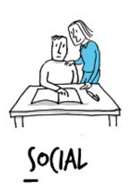

People who are in this category like to work with their hands, see the physical world, and engage in physical activities. They are adventurous, they often like the outdoors, and they like to explore.
People who are in this category like to see how things work, analyze what they find, and solve problems. They are curious, and always looking for answers to questions like "how and why?"
People who are in this category are creative and focused on self-expression. They like variety and unstructured situations where they are free to use their creative skills.
People who are in this category like to work with other people; they enjoy helping others, solve their problems. They usually have good communication skills and are natural leaders.
People who are in this category like to work with others. They often lead the way to ensure that the job gets done. They usually work with a high degree of energy and are always working towards finding solutions.
People who are in this category are detail-oriented, organized, and rule followers. They like to know exactly what is expected of them and take pride in completing their tasks precisely well.
The assessment process analyzes a student's top three RIASEC majors, providing valuable insights into their basic occupational themes. This helps in understanding the student's basic inclinations, values, and career interests.